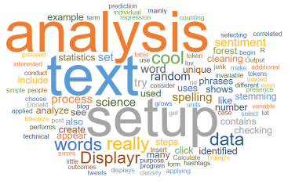
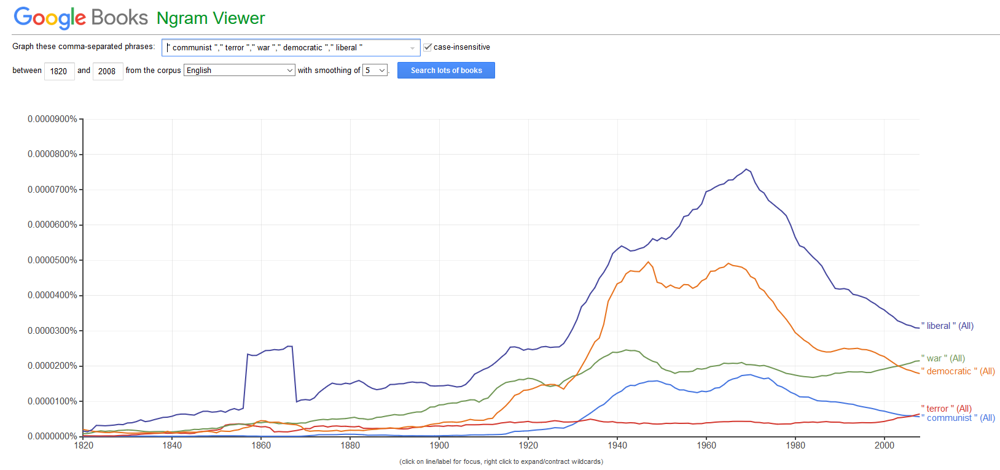
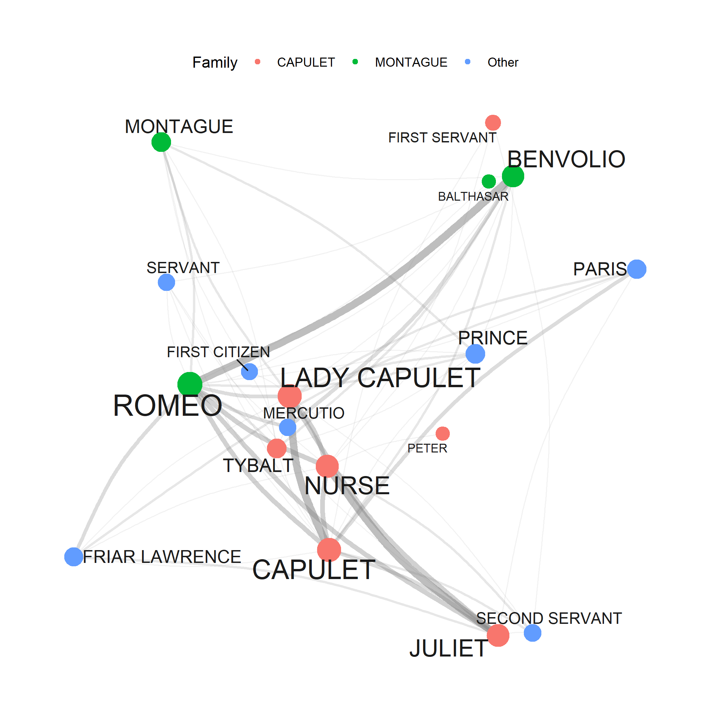
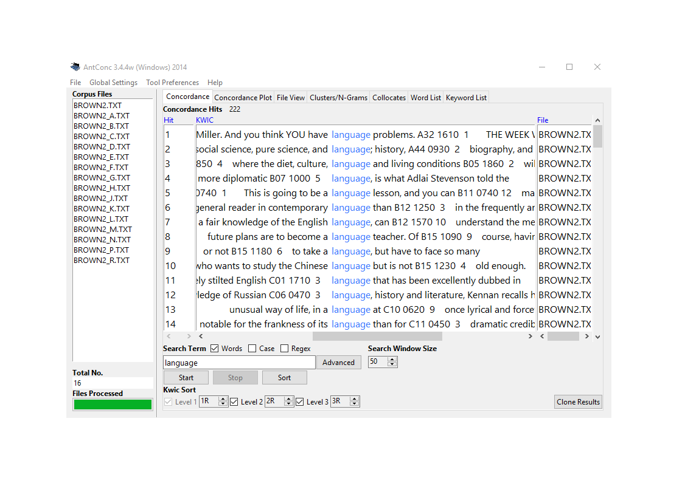
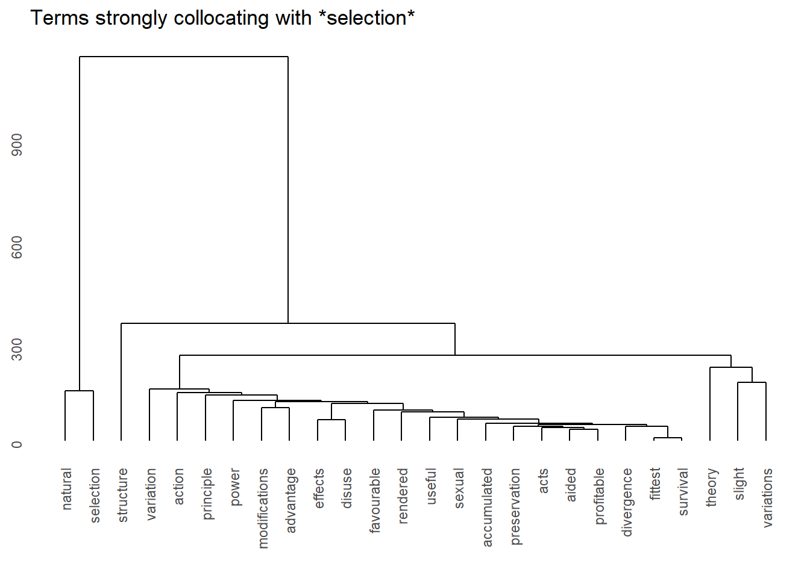
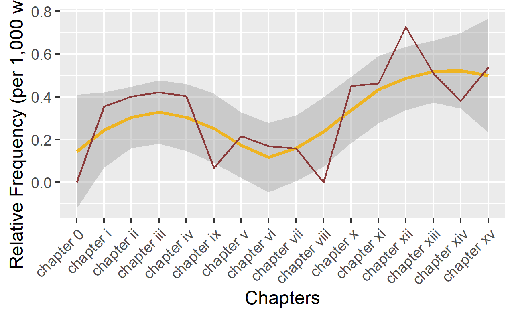
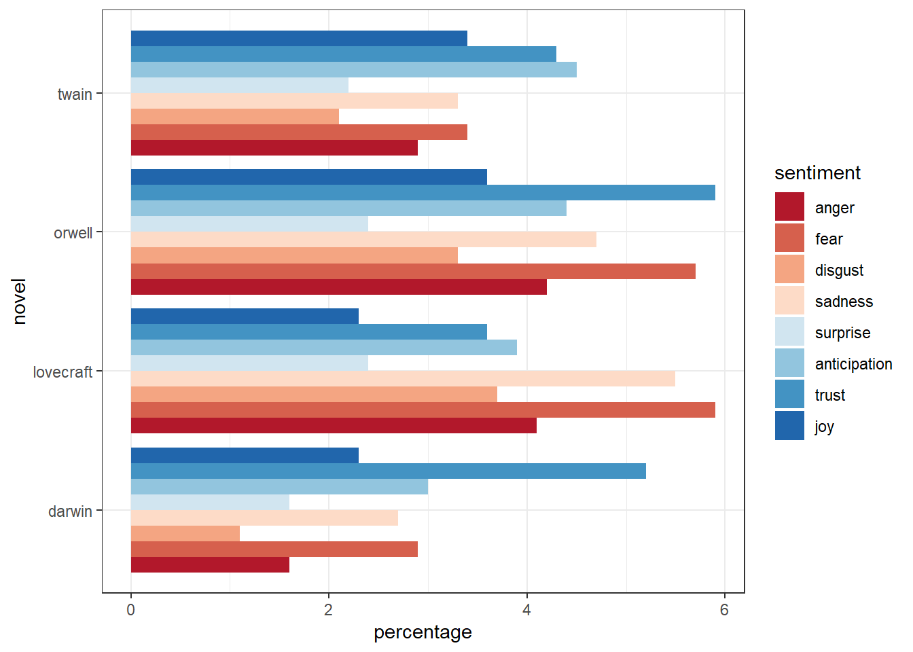
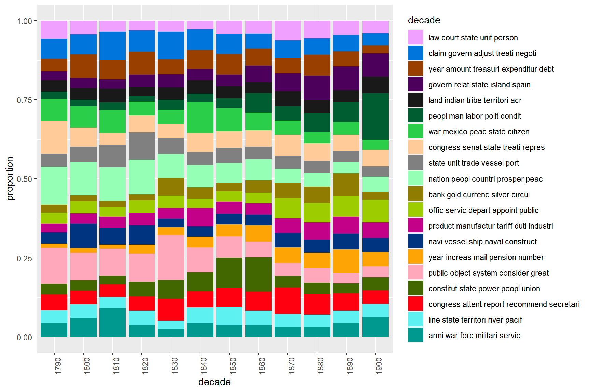
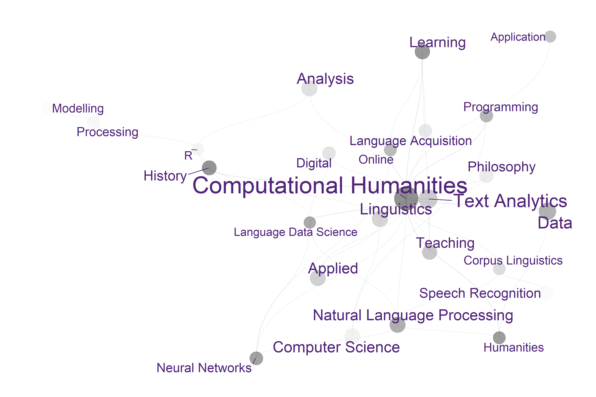

What is Text Analysis?

Text Analysis (TA) refers to the process of examining, processing, and interpreting unstructured data (texts) to uncover actionable knowledge using computational methods. Unstructured data (text) can, for example, include emails, literary texts, letters, articles, advertisements, official documents, social media content, transcripts, and product reviews. Actionable knowledge refers to insights and patterns used to classify, sort, extract information, determine relationships, identify trends, and make informed decisions.
Sometimes, Text Analysis is distinguished from Text Analytics. In this context, Text Analysis refers to manual, close-reading, and qualitative interpretative approaches, while Text Analytics refers to quantitative, computational analysis of text. However, in this tutorial, we consider Text Analysis and Text Analytics to be synonymous, encompassing any computer-based qualitative or quantitative method for analyzing text.
While TA, Distant Reading (DR), Corpus Linguistics (CL), Natural Language Processing (NLP), and Text Mining (TM) share the common goal of using textual data, they differ in their approaches, methodologies, and objectives. TA can be seen as an umbrella term encompassing the other types of analyses or approaches mentioned before. The following sections provide details of these approaches so it becomes clearer how they relate and differ from TA.
Distant Reading (DR) is an approach to analyzing (literary) texts pioneered by Franco Moretti Moretti. It involves analyzing large corpora of literary texts using computational methods to identify broad patterns and trends. Distant reading focuses on the quantitative analysis of texts rather than close, qualitative reading. It allows for the exploration of large-scale patterns and trends that would be difficult to discern through traditional close-reading techniques. Distant reading is a cover term for TA applications that investigate literary and cultural trends by analyzing large amounts of textual data. In contrast, close reading refers to the traditional method of reading texts in detail to interpret their meanings. While both TA and distant reading utilize similar computational methods, they differ in their outlooks. The outlook of DR is to extract information from text without engaging in close reading, i.e., without reading the document(s) themselves, but rather focusing on emerging patterns in the language used.
Corpus Linguistics (CL) Amador Moreno is a branch of linguistics that involves the study of language using large collections of texts known as corpora. It aims to analyze linguistic phenomena by examining patterns and frequencies of words and structures within a corpus. Corpus linguistics provides empirical data and insights into language use, variation, and change over time.
Natural Language Processing (NLP) Mitkov is a field of computer science that focuses on the interaction between computers and human languages. It focuses on developing and evaluating methods that aim to enable computers to understand, interpret, and generate human language in a meaningful way. Key aspects of NLP include understanding the meaning and context of text or speech, extracting information from large volumes of unstructured data, and generating human-like text. NLP techniques utilise machine and deep learning and are used in various applications such as machine translation, speech recognition, chatbots, information retrieval, and text classification.
Text Mining (TM) is a data science field focused on extracting information and insights from large volumes of unstructured text data. Text Mining is decidedly data-driven and typically applies automated methods without substantial human supervision. This allows for the efficient processing of vast text data sets using techniques from NLP, machine learning (ML), and statistics, such as text classification, clustering, sentiment analysis, and entity recognition. TM is particularly associated with social media and Big Data, where manual analysis is impractical due to the sheer volume of data. Businesses use TM to analyze customer feedback from social media, online reviews, and surveys to gain insights into consumer sentiment and preferences.
Text Analysis (TA) is broader than Corpus Linguistics (CL) and Distant Reading (DR) as it is not limited to literary texts or the understanding of language. Additionally, TA is less focused on developing and testing computational methods, as is common in Natural Language Processing (NLP) and it is more common in TA to have human-in-the-loop workflows compared to TM. TA uses computational analyses of text to address a wide range of topics, falling within the realm of computational humanities research. This field represents the application of computational methods in the humanities, leveraging these techniques to explore and analyze diverse humanities-related questions.
The advantages of Text Analysis include:

Text Analysis is rapidly gaining popularity in the humanities because textual data is readily available and because computational methods can be applied to a huge variety of research questions. The attractiveness of computational text analysis based on digitally available texts and in their capability to provide insights that cannot be derived from close reading techniques.

While rapidly growing as a valid approach to analyzing textual data, Text Analysis is critizised for lack of “quantitative rigor and because its findings are either banal or, if interesting, not statistically robust (see here. This criticism is correct in that most of the analysis that performed in Computational Literary Studies (CLS) are not yet as rigorous as analyses in fields that have a longer history of computational based, quantitative research, such as, for instance, corpus linguistics. However, the practices and methods used in CLS will be refined, adapted and show a rapid increase in quality if more research is devoted to these approaches. Text Analysis simply offers an alternative way to analyze texts that is not in competition to traditional techniques but rather complements them.
So far, most of the applications of Text Analysis are based upon a relatively limited number of key procedures or concepts (e.g. concordancing, word frequencies, annotation or tagging, parsing, collocation, text classification, Sentiment Analysis, Entity Extraction, Topic Modeling, etc.). In the following, we will explore these procedures and introduce some basic tools that help you perform the introduced tasks.
Tools versus Scripts
It is perfectly fine to use tools such as AntConc (Anthony) or SketchEngine (Kilgarriff et al.) for the analyses exemplified below. However, the aim of LADAL is not primarily to show how to perform text analyses but how to perform text analyses in a way that complies with practices that guarantee sustainable, transparent, reproducible research. As R code can be readily shared and optimally contains all the data extraction, processing, visualization, and analysis steps, using scripts is preferable over using (commercial) software. In addition to being not as transparent and hindering reproduction of research, using tools can also lead to dependencies on third parties which does not arise when using open source software. Finally, the widespread use of R particularly among data scientists, engineers, and analysts reduces the risk of software errors as a very active community corrects flawed functions typically quite rapidly.
Glossary of Important Concepts
Below, you will find explanations of concepts and methods that are important in Text Analysis and also links to relevant resources (including LADAL tutorials).
Word
What a word is is actually very tricky. For instance, How many words are there in this sentence?
The cat sat on the mat.
One answer is that there are six words; that is, there are six groups of characters which are separated according to typographical convention.
But there is another answer: There are five words, that is five distinct sequences of characters and one of those sequences (the) occurs twice.
The terms commonly used to make this distinction are type and token. Tokens are instances of types, therefore if we count tokens, we count without considering repetition, while if we count types, we do consider repetition. In our example, there are five types (the, cat, sat, on, mat) but six tokens, because there are two tokens of one of the types (the).
There is a further distinction we may need to make which we can see if we consider another question: are cat and cats the same word? They are distinct types, and therefore must also be distinct as tokens. But we have an intuition that at some level they are related, that there is some more abstract item which underlies both of them. This concept is usually referred to as a lemma.

Concordancing
In Text Analysis, concordancing refers to the extraction of words from a given text or texts (Lindquist). Commonly, concordances are displayed in the form of key-word in contexts (KWIC) where the search term is shown with some preceding and following context. Thus, such displays are referred to as key word in context concordances. A more elaborate tutorial on how to perform concordancing with R is available here. If you do not want to use coding to extract concordances, a highly recommendable tool for extracting concordances (and many other TA tasks) is AntConc.
Concordancing is helpful for seeing how the term is used in the data, for inspecting how often a given word occurs in a text or a collection of texts, for extracting examples, and it also represents a basic procedure and often the first step in more sophisticated analyses of language data.
Corpus (pl. Corpora)
A corpus is a machine readable and electronically stored collection of natural language texts representing writing or speech chosen to be characteristic of a variety or the state of a language (see Sinclair 1991). Corpora are great for extracting examples of natural examples and testing research hypotheses as it is easy to obtain information on frequencies, grammatical patterns, or collocations and they are commonly publicly available so the research results can be contrasted, compared and repeated.
There are four main types of corpora:
Monitor corpora: large collections of texts from different genres/modes that aim at representing a language or language variety, e.g., International Corpus of English (ICE), Corpus of Contemporary Corpus of American English (COCA), that are, e.g., used to analyse the use of certain linguistic phenomena or to investigate collocations of certain words/topics
Learner corpora: Contain data from language learners - these can be either L1 learners, e.g., Child Language Data Exchange System (CHILDES), and/or L2 learners, e.g., the International Corpus of Learner English (ICLE)) - to study, e.g., how L1 and/or L2 speakers learn/acquire (aspects of) a language and to see how learners differ from native speakers.
Historical or diachronic corpora: Contain data from different points in time that allow to analyse the development of a language or language variety (e.g., Penn Parsed Corpora of Historical English,The Helsinki Corpus of English Texts) to study, e.g., how language changes or how genres develop over time.
Specialized corpora: Contain data representing a specific genre/text type (e.g., British Academic Written English Corpus (BAWE)) to study, e.g., (linguistic) features of a genre (e.g. academic writing) or language in class rooms.

Collocations
Collocations are words that are attracted to each other (and that co-occur or co-locate together), e.g., Merry Christmas, Good Morning, No worries, or Fuck off. Collocations are important because any word in any given language has collocations, i.e., others words that are attracted to that word or words that that word is attracted to allow us to anticipate what word comes next and collocations are context/text type specific. It is important to note that collocations to not have to appear/occur right next to each other but that other words can be in between. There are various different statistical measures are used to define the strength of the collocations, like the Mutual Information (MI) score and log-likelihood (see here for an over view of different association strengths measures).
Document Classification
Document or Text Classification (also referred to as text categorization) generally refers to process of grouping texts or documents based on similarity. This similarity can be based on word frequencies or other linguistics features but also on text external features such as genre labels or polarity scores.
Document-Term Matrix
Document-Term Matrices (DTM) and Term- Document Matrices (TDM) contain the frequencies of words per document. DTM and TDM differ in whether the words or the documents are represented as rows. Thus, the words (terms) are listed as row names and the documents represent the column names while the matrix itself contains the frequencies of the words in the documents.

Frequency Analysis
Frequency Analysis is a suit of methods which extract and compare frequencies of different words (tokens and/or types), collocations, phrases, sentences, etc. These frequencies are the often tabulated to show lists of words, phrases, etc. descending by frequency, visualized to show distributions, and/or compared and analyzed statistically to find differences between texts or collections fo texts.
Keyword Analysis
Keyword Analysis refers to a suit of methods that allow to detect words that are characteristic of on text or collection of texts compared to another text/collection of texts. There are various keyness measures such as Log-Likelihood or the term frequency–inverse document frequency (tf-idf).
Lemma (Lemmatization)
Lemma refers to the base form of a word (example: walk, walked, and walking are word forms of the lemma WALK). Lemmatization refers to a annotation process in which word forms are associated with their base form (lemma). Lemmatization is a very common and sometimes useful processing step for further analyses. In contrast to stemming - which is a related process - lemmatization also takes into account semantic differences (differences in the word meaning), while stemming only takes the orthography of words into consideration.
N-Gram
N-grams are combinations/sequences of words, e.g. the sentence I really like pizza! has the bi-grams (2-grams): I really, really like, and like pizza and the tri-grams (3-grams) I really like and really like pizza. N-grams play an important part in natural language processing (e.g. part-of-speech tagging), language learning, psycholinguistics models of language production, and genre analysis.
Natural Language Processing
Natural Language Processing (NLP) is an interdisciplinary field in computer science that has specialized on processing natural language data using computational and mathematical methods. Many methods used in Text Analysis have been developed in NLP.
Network Analysis
Network Analysis is the most common way to visualize relationships between entities. Networks, also called graphs, consist of nodes (typically represented as dots) and edges (typically represented as lines) and they can be directed or undirected networks.
In directed networks, the direction of edges is captured. For instance, the exports of countries. In such cases the lines are directed and typically have arrows to indicate direction. The thickness of lines can also be utilized to encode information such as frequency of contact.
Part-of-Speech Tagging
Part-of-Speech (PoS) Tagging identifies the word classes of words (e.g., noun, adjective, verb, etc.) in a text and adds part-of-speech tags to each word. There are various part-of-speech tagsets, e.g. the Penn Treebank is the most frequently used tagset used for English. A more detailed tutorial on how to perform part-of-speech tagging in R can be found here.
Project Gutenberg
The Project Gutenberg is a excellent resource for accessing digitized literary texts. The Project Gutenberg library contains over 60,000 ebooks that are out of copyright in the US. A tutorial on how to download texts form the Project Gutenberg library using the GutenbergR package can be found here.
Regular Expression
Regular Expressions - often simply referred to as regex - are symbols or sequence of symbols utilized to search for patterns in textual data. Regular Expressions are very useful and widely used in Text Analysis and often different programming languages will have very similar but slightly different Regular Expressions. A tutorial on how to use regular expression in R can be found here and here is a link to a regex in R cheat sheet.
Semantic Analysis
Semantic Analysis refers to a suit of methods that allow to analyze the semantic (semantics) fo texts. Such analyses often rely on semantic tagsets that are based on word meaning or meaning families/categories. Two examples of such semantic tagsets are the URCEL tagset and the Historical Thesaurus Semantic Tagger (Alexander and Wattam 2015) developed at the University of Glasgow.

Sentiment Analysis
Sentiment Analysis is a computational approach to determine if words or texts are associated with (positive or negative) polarity or emotions.Commonly, sentiments analyses are based on sentiment dictionaries (words are annotated based on whether they occur in a list of words associated with, e.g., positive polarity or emotion, e.g., fear, anger, or joy. A tutorial on how to perform sentiment analysis in R can be found here.
String
In computational approaches, a string is a specific type of data that represents text and is often encoded in specific format, e.g., Latin1 or UTF8. Strings may also be present in other data types such as lists or data frames. A tutorial on how to work with strings in R can be found here.
Term Frequency–Inverse Document Frequency (tf-idf)
Term Frequency–Inverse Document Frequency is a statistical measure of keyness which reflects how characteristic a word is of a specific text. Term Frequency–Inverse Document Frequency is based on the frequencies of words in a text compared to the frequency of documents in which it occurs

Topic Modeling
Topic modelling is a machine learning method seeks to answer the question: given a collection of documents, can we identify what they are about?
Topic model algorithms look for patterns of co-occurrences of words in documents. We assume that, if a document is about a certain topic, one would expect words that are related to that topic to appear in the document more often than in documents that deal with other topics. Topic model commonly use Latent Dirichlet Allocation (LDA) to find topics in textual data.
There are two basic types of Topic models
supervised or seeded topics models where the researchers provides seed terms around which the LDS looks for topics (collections of correlating terms)
unsupervised or unseeded topic models which try to find a predefined number of topics (collections of correlating terms)
A tutorial on how to work with strings in R can be found here.

Text Analysis at UQ
As LADAL has been established at The University of Queensland, we have listed selected resources on Text Analysis offered by UQ.
The UQ Library offers a very handy and attractive summary of resources, concepts, and tools that can be used by researchers interested in Text Analysis and Distant Reading. Also, the UQ library site offers short video introductions and addresses issues that are not discussed here such as copyright issues, data sources available at the UQ library, as well as social media and web scaping.
In contrast to the UQ library site, the focus of this introduction lies on the practical how-to of text analysis. this means that the following concentrates on how to perform analyses rather than discussing their underlying concepts or evaluating their scientific merits.